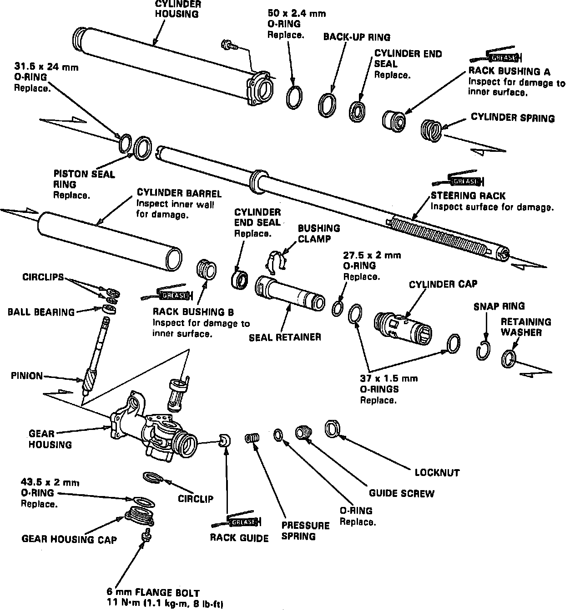
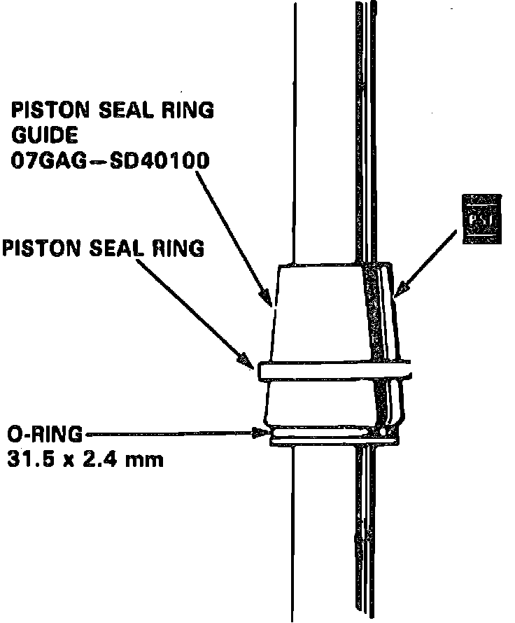

Power Steering Gear Service
Disable coded theft protection system as described in Accessories and Optional Equipment / Antitheft and Alarm Systems / Service and Repair. On models equipped with airbag, disable airbag system as described in Air Bags and Seat Belts / Air Bags (Supplemental Restraint Systems) / Airbag System Disarming.A Supplemental Restraint System (Airbag) is included within the steering wheel hub. The battery ground cable must be disconnect and isolated before performing this procedure. Failure to do so may result in accidental deployment and personal injury.
All electrical harnesses for this system are covered with a yellow outer insulation, with related components located in the steering column, center console, dash panel and front fenders. It is recommended that only authorized personnel work on vehicles with this type of restraint system.
When performing service procedures note the following:
1. Install piston seal ring using tool No. 07GAG-SD40100 or equivalent.
2. Seat piston seal ring using tool No. 07GAG-SD40200 or equivalent.
3. Install cylinder end seal using tool No. 07GAG-SD40300 or equivalent.
4. Install cylinder using guide tool No. 07GAG-SD40400 or equivalent.
5. Torque gear housing attaching bolts to 8 ft. lbs.
6. Torque rack guide screw to 2-2.9 ft. lbs. before backing it off 15-25°
DISASSEMBLE
Fig. 8 Exploded View Of Steering Gear:

1. Remove control valve unit from steering gear.
2. Carefully clamp gear into vise with soft jaws.
3. Remove tie-rod assembly, then the boot band and tube clamps, Fig. 8.
4. Pull dust seals away from ends of gearbox.
5. Hold steering rack with a 19mm wrench and unscrew rack end with a wrench.
6. Push right end of rack back into cylinder housing so smooth surface that rides against seal will not be damaged.
7. Loosen rack screw locknut and remove rack guide screw.
8. Remove spring and rack guide from gear housing.
9. Remove circlip, then the steering pinion assembly.
10. Remove four cylinder housing to gear attaching bolts, then slide housing off rack.
11. Remove O-ring, back-up ring, steering rack bushing ``A'' and cylinder spring.
12. Remove cylinder end seal from cylinder housing.
13. Remove cylinder, cylinder seal retainer, cylinder cap and steering rack from gear housing.
14. Remove retainer washer from gear housing.
15. Check pinion holder for excessive play or rough movement. If there is excessive play or any rough movement, replace bearing as follows:
a. Remove gear housing cap from gear housing.
b. Remove circlip from pinion holder, then the pinion holder from gear housing.
c. Check needle roller bearings in pinion holder and gear housing far any damage. If needle bearings are satisfactory, pack them with grease. If needle bearings show damage, replace them as a set.
d. Remove pinion lower ball bearing from gear housing.
e. Using bearing installation tool No. 07746-0010300 or suitable equivalent and a hammer, drive new pinion lower ball bearing into gear housing.
f. Install pinion holder into gear housing, then the circlip with its tapered side facing out.
g. Grease O-ring, then install it in groove of gear the gear housing.
h. Install gear housing cap.
16. Remove cylinder and seal retainer from steering rack.
17. Remove O-ring, circlip and cylinder cap from seal retainer.
18. Remove O-rings from cylinder cap, then the busing stopper ring from seal retainer.
19. Remove cylinder end seal, then carefully pry piston seal ring and O-ring off rack.
ASSEMBLE
Fig. 9 Installing Piston Seal Ring:

1. Install new O-ring on rack.
2. Coat piston seal ring guide with power steering fluid and slide onto rack, large end first.
3. Position new piston seal ring onto piston seal ring guide tool No. 07GAG-SD40100 or equivalent, then slide it down to the large end of the tool and pull it off into piston groove on top of O-ring, Fig. 9.
4. Coat piston seal ring and inside of special tool with power steering fluid, then carefully slide tool onto rack and over piston ring.
5. Rotate tool as you move it up and down to seat piston seal ring.
6. Coat new O-rings with grease and install them on cylinder cap.
7. Slide cylinder cap onto seal retainer, then install circlip and O-ring on seal retainer.
8. Grease sliding surface of steering rack bushing ``B'' and install busing on steering rack with groove of bushing facing steering rack piston.
9. Grease sliding surfaces of new cylinder end seal and seal slider tool No. 07GAG-SD40300 or equivalent, then place seal on tool with its grooved side facing opposite slider.
10. Grease steering rack and install tool. Ensure rack teeth do not face slot in tool.
11. Separate cylinder end seal from tool, then remove tool from rack.
12. Fit seal retainer on steering rack, then push rack bushing ``B'' toward seal retainer until cylinder end seal is seated in retainer.
13. Fit seal stopper ring in groove of seal retainer securely, then grease steering rack.
14. Install retainer washer on gear housing.
15. Place gear housing on work bench and insert seal retainer and steering rack into gear housing.
16. Coat inside of cylinder with power steering fluid, then slide it over rack and into gear housing until it seats.
17. Install cylinder spring over rack, then coat rack bushing ``A'' with power steering fluid and install it on spring.
18. Install piston seal ring guide tool No. 07GAG-SD40400 or vinyl tape onto end of steering rack and coat with grease.
19. Coat inside surface of cylinder with power steering fluid and install cylinder end seal with its grooved side facing out.
20. Install O-ring and back-up ring on gear housing.
21. Carefully position cylinder housing on gear housing and loosely install using four bolts. Be careful not to damage the end seal in cylinder housing.
22. Remove vinyl tape or special tool from end of steering rack.
23. While pushing cylinder housing and gear housing together, torque bolts to 16 ft. lbs.
24. Install steering pinion in pinion holder, then the circlip with its tapered side facing out, securely into pinion holder groove.
25. Install O-ring onto rack guide screw, then coat rack guide with grease.
26. Install rack guide, spring and rack guide screw on gear housing.
27. Tighten rack guide screw until it compresses spring and seats against rack guide, then loosen it.
28. Torque screw to 36 inch lbs., back it off approximately 20°, then install locknut on rack guide screw.
29. While holding rack guide screw in position, torque locknut to 18 ft. lbs.
30. Install valve body unit.
31. Install new lock washer in groove of steering rack.
32. Holding steering rack with a wrench, torque rack end to 40 ft. lbs.
33. Stake four sections of lock washer using suitable drift.
34. Apply steering grease to circumference of rack end housing, then coat rack end groove with suitable silicone grease.
35. Install boots with tube clamps on rack ends.
36. Install boot bands and bend both ends of locking tabs. Turn rack from left to right to ensure that boots do not twist or bind.
37. Restore coded theft protection system and rearm airbag.